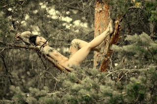

Герб та мавки Полісся.

Поліські мавки лісові 
Мавка Полісся здебільшого сексуально приваблива молода дівчина. Водночас вона доволі наївна, не надто рішуча в своїх діях, часто не вміє боротися за своє щастя й кохання...
Хто така поліська мавка
Етимологію імені мавки М. Фасмер виводить з видозміненої форми - Навка, зближеної з основами "малий" (мавкати), нявкати та ін. В старовину сучасне Полісся являло собою цілісний лісоболотяний масив від російської Брянщини через усю північну Україну й південну Білорусь до польської Влодави й литовської Дзукії, тож історична поліська мавка, можливо, споріднена також із Навь - людським втіленням смерті, що не має фізичного тіла, а також з готським mawi - "дівчина" та литовською богинею лісу Медейною (Medeina).
{kind=link}
Поліські мавки - це душі померлих молодих дівчат, що лишають по собі на землі чи болотах сліди босих дитячих ніг, влаштовують голі танці та інші забави, особливо під місячним сяйвом, власним співом і красою заманюючи до себе молодих хлопів, яких вони залоскочують до смерті або заводять у безвість. При цьому лоскотати означає не лише фізичну дію, але й замовляння.
Щоб уберегти себе від чар лісових мавок парубкам радили попоїсти добряче часнику або цибулі, чи мати в руках листя полину або любистку. Вважалося також, що сексуальну хіть мавок можна було відвернути від себе, вивернувши назовні власну сорочку. При цьому проти дівчат та жінок чари мавки не діють.
{kind=link}
Замовляння від мавки
Мавко, мавко,
На тобі полинь,
А мене покинь.
Як виглядає мавка?
Мавки Полісся переважно мають округле бліде обличчя, красиві й блискучі очі, високий зріст і довге лляне (світле) волосся. При цьому голодна ("хтива") мавка завжди тримає свої волосся прикрашеним квітами. Головна особливість, за якою можна було впізнати мавку - її тіло на спині наче відкрите, крізь спину видно нутрощі.
Не маючи справжнього тіла, лісові мавки також не віддзеркалюються у воді й не відкидають тіні ніде, крім болота. Біжучи по траві, мавка також його не колише. Живуть мавки Полісся переважно на березах у глухому лісі поблизу боліт.
{kind=link}
Подекуди зустрічалися також і мавки-хлопчаки, вочевидь гомосексуальної орієнтації, що мали коротке, кучеряве й руде волосся. Пізніше в деяких краях Полісся мавку вважали також за втілення нехрещеної дитини - яку можна відправити до раю, просто вголос "хрестивши" її будь-яким християнським іменем.
Поліська мавка постає перед чоловіком цілком оголеною, або вдягненою в тонкий і прозорий одяг. Доволі ревнива до своїх подруг-русалок. При цьому вважається, що мавки красивіші й менш небезпечні - тому "краще з мавкою, ніж русалкою".
Мавчин тиждень
Особливу активність лісові мавки проявляють до і після Купала, на Мавчин тиждень, відомий також як Зелений. У цей час по цілому Поліссю ходять голодні мавки, намагаючись звабити незайманих і нецілованих хлопців. При цьому, на відміну від іншої пори роки, на Мавчин тиждень вони переважно не залоскочують, а власне закохують у себе хлопців - які живуть по тому бобилями.
{kind=link}
Особливо активні лісові оргії спостерігалися на Мавчин великдень - у четвер Мавчиного тижня.
"Лісова пісня" Лесі Українки
Мавка - Ох, як я довго спала!
Лісовик - Довго, дочко!
Вже й сон-трава перецвітати стала.
От-от зозулька маслечко сколотить,
В червоні черевички убереться
і людям одмірятиме літа.
Вже з вирію поприлітали гості.
Он жовтими пушинками вже плавають
на чистім плесі каченятка дикі.
Мавка - А хто мене збудив?
Лісовик - Либонь, весна.
Поліська мавка увічнена в світовій літературі геніальним твором Лесі України "Лісова пісня".